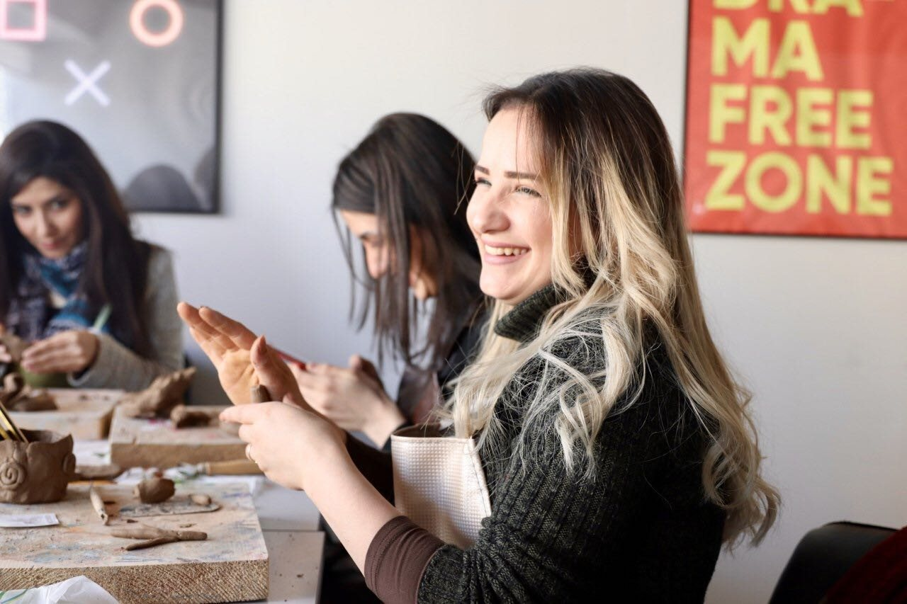
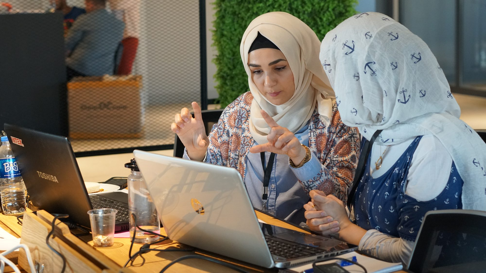
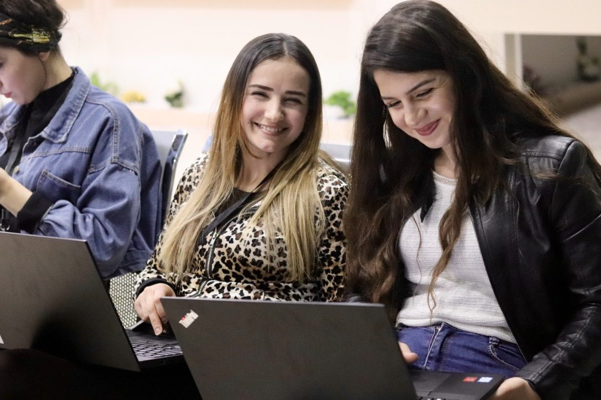

Skills that stick
Hands-on projects and real-world challenges mean learning that lasts. Young people don’t just understand concepts. They own them and can use them immediately.

Created for underserved youth stepping confidently into the future of work.
Funded and supported by
AI is closing the doors that got young people their first job

. We’re building new ones
for underserved talent in 145+ countries.What we do
Our programs
A selective, 4-month fellowship for emerging leaders navigating a rapidly changing world. Fellows build real-world projects, develop AI-era digital and leadership skills, and join a global community.
Learn more20,000+ Free, self-paced courses in AI, coding, UX and more. Earn certificates and start tonight.
Start learningOur graduates work at…
Case studies
Real voices
As featured in
“When you educate, you allow people to create their own solutions and bring their ideas to life. It gives them power.”